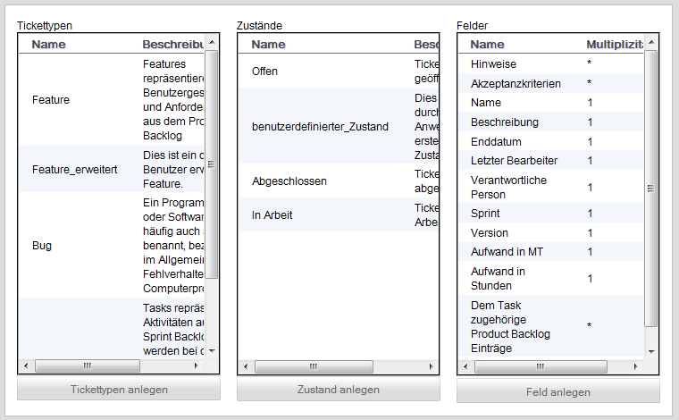

Feldtypen-, Zustands- und Tickettypen-Erzeugung
Die Oberfläche dient der Erzeugung von Feldern, Zuständen und Tickettypen.

Durch einen Klick auf den Buttons "Tickettypen anlegen" kann ein Tickettyp angelegt werden.
Durch einen Klick auf den Buttons "Zustand anlegen" kann ein Zustand angelegt werden.
Durch einen Klick auf den Buttons "Feld anlegen" kann ein Tickettyp angelegt werden.
Created with the Personal Edition of HelpNDoc: Easily create CHM Help documents